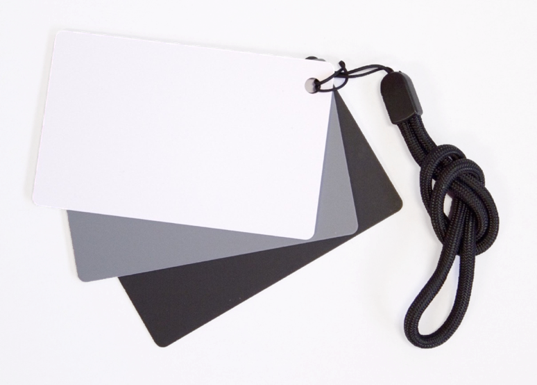

Já passou por dias em que suas fotos ficavam extremamente azuladas ou extremamente alaranjadas? Isso acontece por causa de um ajuste inadequado na configuração do balanço de brancos. Não está entendendo nada? Vamos explicar com calma.
A temperatura das cores
Considere que em um gradiente que varie do azul para o laranja, cores mais azuladas são consideradas mais frias e cores mais alaranjadas são consideradas mais quentes.
Geralmente, medimos temperaturas em graus Celsius (ºC). Na fotografia usamos outra unidade de medida: o Kelvin (K). Cores quentes chegam perto dos 10.000K, enquanto cores frias ficam na faixa dos 2000K.
Cada tipo de fonte luminosa emite luz em uma temperatura diferente. Lâmpadas incandescentes (aquelas antigas, de desenho animado) emitem luz com temperaturas quentes. Lâmpadas fluorescentes brancas emitem luz em temperaturas mais frias. Geralmente a temperaturada cor da lâmpada está escrita nela ou na embalagem.
Deixando o branco sempre branco
Imagine uma folha de papel extremamente branca:
- Se você estiver em um ambiente iluminado por uma lâmpada fluorescente, vai enxergar o papel com uma cor branca.
- Se estiver ao ar livre em um dia nublado, vai enxergar o papel com uma cor branca.
- Se estiver em um escritório iluminado por LEDs brancos, vai enxergar o papel com uma cor branca.
Não importa a temperatura da fonte de luz, nosso cérebro faz um ajuste automático para percebermos objetos na cor certa.
Nas câmeras
Da mesma forma, câmeras também podem fazer esse ajuste. Isso pode ser feito automaticamente ou de forma manual.
No modo automático, a câmera busca uma cor predominante na imagem e ajusta as cores com base nisso. É o ajuste mais conveniente na maioria das vezes, pois não perdemos tempo na hora da foto.
No modo manual, podemos inserir manualmente a temperatura da fonte de luz. A maioria das câmeras tem uma lista dos tipos de fonte, como sol, lâmpadas fluorescentes, dias nublados, etc.
Também podemos dar uma referência para a câmera tirando uma foto de um cartão preto, branco ou cinza que pode ser encontrado em lojas de material fotográfico. Esse método é o mais preciso e costuma ser usado por fotógrafos profissionais.

Muitas vezes fotógrafos usam o ajuste manual para forçar um balanço de brancos inadequado. Às vezes isso pode dar um tom artístico à foto. Geralmente cores quentes remetem ao romance. Cores frias podem ser usadas para indicar solidão ou sofrimento, etc.
No computador
Se a foto foi tirada com ajuste inadequado, ainda é possível consertar isso no computador (ou até mesmo no celular). Mesmo os programas de edição mais simples costumam vir com a opção do ajuste de brancos (às vezes chamado de temperatura da cor).